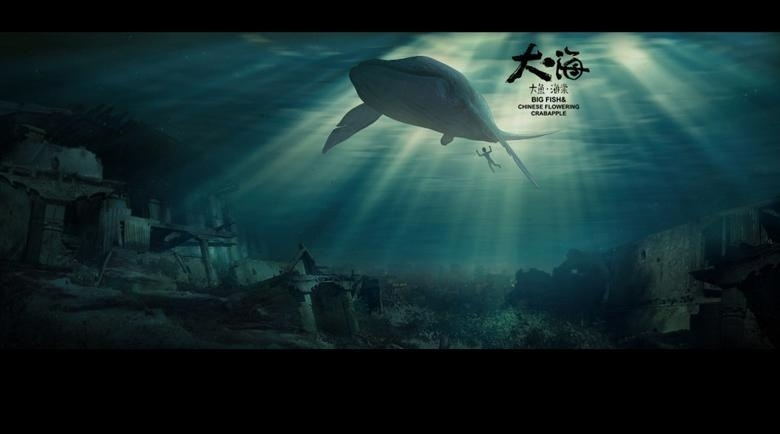

您好，我叫Get了没，20岁，坐标武汉。 网络营销专业,但对前端很感兴趣，所以自学前端，今后的职业规划是朝着全栈发展，目前在学ajax、AnjularJs。 在实习的五个月来,本人在公司主要负责整个页面的前端开发，配合后台人员实现产品前端界面效果与功能。写过响应式页面，移动端页面，pc端页面。小的来说，商城，企业网站，视频，音频，评论，地图等都有涉及。 在此很感谢易云互动有限公司 对我的培养，让我学到了很多东西。目前就职于**公司。
不浮躁，喜欢前端，执行力，学习能力都棒棒哒！目前，能做点粗糙设计（比如本网站）。

这是一段文字
这也是一段文字
这又是一段文字
这还是一段文字
结尾，期待有机会与您共事！